|
To co pokaza³em wy¿ej to budowle wykonane przez cz³owieka bardzo pierwotnego z epoki
tak bardzo sta-rego kamienia, ¿e historycy maj± prawdopodobnie problem w ustaleniu
przymiotnika. Wtedy to cz³owiek nie wymy¶li³ jeszcze sztuki i st±d toporne ledwo
ociosane kamienne bloki. W miarê rozwoju intelektualnego w swoich budowach zacz±³
poszukiwaæ piêkna i faktycznie budowa³ coraz "milej dla oka". U¿ywa³ w dalszym ci±gu
ogromnych elementów co ¶wiadczy o jego ogromnej sile fizycznej.
Na pocz±tek dwie "¶wi±tynie" staro¿ytnego Egiptu wykonane z wielkich, kamiennych i
oszlifowanych perfekcyjnie bloków w formie doskona³ych prostopad³o¶cianów. K±ty
proste ¶wiadcz± o u¿ywaniu jakiego¶ staro¿ytnego k±townika, którego nie znaleziono
byæ mo¿e dlatego, ¿e by³ drewniany i nie zachowa³ siê do naszych czasów. Sprawa
uniesienia kilkudziesiêciotonowych bloków na wysoko¶æ paru metrów te¿ wed³ug
archeologów nie sprawia³a ¿adnych trudno¶ci. Ludzi do pracy by³o mnóstwo, lin
i drewna te¿. Dodaæ nale¿y kilka staro¿ytnych wielokr±¿ków i gotowe. I jeszcze
jedno wa¿ne spostrze¿enie - w Egipcie wystêpowa³ jeszcze "koordynator jednolito¶ci
wysi³ku" przedstawiany na staro¿ytnych rysunkach jako cz³owiek z batem.
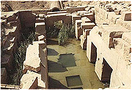 |
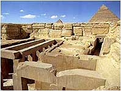 |
| Ozyrejon w Abydos |
¦wi±tynia Chefrena w Giza |
Takie jak tu bloki, ale w wiêkszej skali ogl±daæ mo¿emy w Baalbeck i te¿ w Egipcie
(zdjêcia poni¿ej), gdzie w assuañskim kamienio³omie odkryto najwiêkszy blok, jeszcze
nie oddzielony od ska³y macierzystej. Mia³ to byæ (tak g³osi nauka) obelisk dla
królowej Hatszepsut, jednak zrezygnowano z jego oddzielenia od pod³o¿a z powodu
pêkniêcia. Sk±d wiadomo, ¿e dla Hatszepsut skoro brak jakiegokolwiek napisu? Czy
tylko dlatego, ¿e wiek obelisku okre¶lono na czas jej panowania?
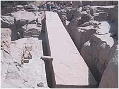 |
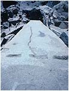 |
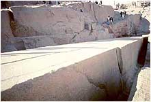 |
|
Wszystko jasne, ale ... Czy pêkniêcie jest wynikiem "z³ego" obchodzenia siê z
kamieniem, czy pokazem dzia³ania si³ natury. Na domiar z³ego, nauka nie jest w
stanie odpowiedzieæ kiedy to siê sta³o. Pozostaje tylko gdybanie i my¶lenie
¿yczeniowe, tak powszechnie stosowane przez historyków w udowadnianiu hipotez.
A je¶li blok pêk³ z przyczyn naturalnych 12,5 tysiêcy lat temu?......
Przenie¶my siê bardziej na pó³noc, do libañskiego Baalbeck. Tutaj te¿ odnaleziono
bloki kamienia przewy¿szaj±ce jednak wag± te z Abydos. Na skrajnych fotografiach
pokazane s± fundamenty ¶wi±tyni Jowisza zbudowane z potê¿nych kamiennych bloków.
Waga? Bagatela. Po kilkaset ton.
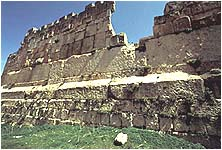 |
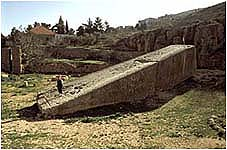 |
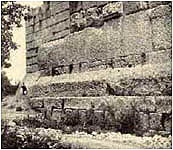 |
Baalbeck. fenickie miasto Baala. Od imienia tego boga prawdopodobnie wywodzi siê imiê
naszego diab³a - Baalzebub (z polska Belzebub, zwany te¿ Lucyferem). Czy to przypadek,
¿e imiê Lucyfer oznacza - nios±cy ¶wiat³o?. Grecy uto¿samiali go z Heliosem. Kanon
nauki umieszcza tê budowê na oko³o 3 tysi±ce lat pne., natomiast budowê ¶wi±tyni
Jowisza przypisuje siê Rzymianom gdzie¶ miêdzy I a III wiekiem ne. Ze ¶wi±tyni
Jowisza pozosta³o kilka kolumn o wysoko¶ci 20 m, które cudem osta³y siê po jaki¶
trzêsieniach ziemi. Znaj±c "technikê" Rzymian nie wydaje mi siê, by byli oni
twórcami fundamentów ¶wi±tyni. W Rzymie nie odnaleziono tak gigantycznych bloków
kamiennych. Ponadto nie mogê sobie u¶wiadomiæ w jaki sposób, jak± technik± Grecy lub Rzymianie
transportowali ciê¿kie bloki (mówimy o dziesi±tkach ton) na znaczne wysoko¶ci.
Przenie¶my siê teraz do grodu Atreusza w Argolidzie na greckim Peloponezie. Powstanie
grodu nauka umieszcza w drugiej po³owie II tysi±clecia pne i wi±¿e go z tak zwan±
kultur± mykeñsko-egejsk±. Z pobie¿nych obliczeñ wynika, ¿e ta kultura jest m³odsza
od sumeryjskiej. Jak wygl±da³y budowle Sumerów? Przede wszystkim inny budulec.
W Mykenach olbrzymie kamienne bloki, w Sumerze ceg³y ze s³omy, gliny i mu³u.
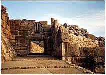 |
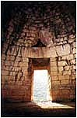 |
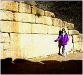 |
Porównuj±c styl Achajów ze stylem w Sumerze nie sposób oprzeæ siê wra¿eniu, ¿e postêp
techniczny jest w tym wypadku na wstecznym biegu. T³umaczenie, ¿e Sumerowie u¿ywali
tylko miejscowego surowca jako¶ mnie nie przekonuje. Dlaczego inne ludy zdolne by³y
sprowadzaæ kamieñ z odleg³o¶ci setek kilometrów, a Sumerowie nie? Lwia brama, wej¶cie
do twierdzy achajskiej jest ³udz±co podobna do g³ównej bramy Machu Picchu. Podobna
belka stropowa, podobny górny ³uk belki. W Machu Picchu brakuje tylko rze¼by lwów.
Zwróæmy uwagê na mur w prawo od bramy. Czy nie przypomina murów "antysejsmicznych"
w Ameryce Po³udniowej czy Delfach?
Dwie nastêpne fotki to skarbiec Atreusza. Spójrzmy na belkê stropow± nad wej¶ciem.
Potê¿na i do tego wyprofilowana. Waga - 120 ton. Przed wej¶ciem do skarbca ogromny
blok w murze, poprzycinany po bokach. Mam wra¿enie, ¿e ten styl budowy sprawia
wra¿enie posêpnego. Czy nie mia³ wzbudzaæ strachu? Czy nie mia³ pokazywaæ
charakteru i potêgi w³adcy? Czy wreszcie nie mia³ oznajmiaæ przybyszowi -
ten który tu mieszka jest potê¿niejszy od ciebie, jest pó³bogiem? A mo¿e
potê¿ne mury chroni³y dostêpu zwyk³ym ludziom do niebezpiecznych materia³ów
znajduj±cych siê wewn±trz?
Teraz przenie¶my siê do Ameryki Po³udniowej. Zacznê od najwiêkszych "kamieni" jakie
uda³o mi siê znale¼æ. Znajduj± siê one w ma³ej wiosce Ollantaytambo w tak zwanym
"krêgu inkaskim". Obszar ten, zajmuj±cy prostok±t 150 na 80 km grupuje najwiêksze
zabytki prehistorii Peru. Machu Picchu, Ollantaytambo, Pisac, Tambomachay, Qenko,
Tipon, Sacsayhuaman oraz per³ê kamieniarki Cusco.
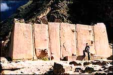 |
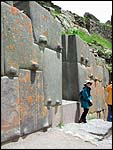 |
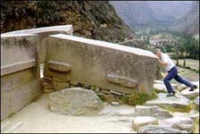 |
Mia³em du¿y problem z doborem zdjêæ, które mówi³y by wszystko o tej potê¿nej budowli.
Wybra³em trzy. Z lewej stwarzaj±cy wra¿enie jednolitego blok, zwany przez uczonych
¶wi±tyni± S³oñca, a sk³adaj±cy siê z sze¶ciu ¶ci¶le dopasowanych bloków. Luki pomiêdzy
kamiennymi blokami uszczelniono kamienn± "plastelin±". W ¶rodku wej¶cie w murze
poni¿ej "¶wi±tyni" oraz blok kamienia, który usi³uje "przesun±æ" turysta.
Widaæ ogrom, ogrom i jeszcze raz ogrom. Czy by³a to ¶wi±tynia S³oñca? ¦miem w±tpiæ.
Brak tu ozdobnych wej¶æ, miejsc na obiekty kultu. Bardziej przypomina to jaki¶ obiekt
przemys³owy. Nikt zapewne jeszcze nie próbowa³ ustaliæ, co znajduje siê za kamiennym
murem. Uczeni w nazywaniu takich miejsc id± raczej rozpêdem ni¿ rozs±dkiem. Ca³y
obszar wokó³ budowli wygl±da jak po wielkim trzêsieniu ziemi, w oko³o porozrzucane
olbrzymie bloki, niektóre mo¿na znale¼æ nawet u podnó¿a góry. Mo¿na s±dziæ, ¿e
straty by³y tak du¿e, ¿e nie zdecydowano siê na odbudowê. A mo¿e nie mia³ kto
odbudowaæ? Du¿e trudno¶ci nastrêcza okre¶lenie charakteru budowli. Dzisiejsza
technika nie pozwala na z³o¿enie od³amków i czê¶ci ze wzglêdu na ich wagê w jedn±
prawdopodobn± ca³o¶æ. St±d bezsensowne nazwy i domys³y.
Najlepiej utrzymane ruiny w ca³ym Peru. Mo¿na rzec pozamiatane, wygrabione, trawka
przystrzy¿ona. Tu i ówdzie dostojnie wa³êsaj± siê lamy. No i oczywi¶cie zawsze
t³um turystów. Nie widaæ natomiast ¿adnego ¶ladu powa¿niejszych badañ archeologicznych.
Przenosi siê tylko mniejsze kamienie (bo takie mo¿e unie¶æ cz³owiek) z miejsca na
miejsce i to jest ca³a dzia³alno¶æ tamtejszych archeologów.
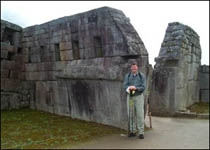 |
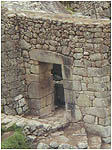 |
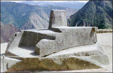 |
Miasto sprawia wra¿enie zniszczonego, a nastêpnie odbudowywanego lub te¿ budowanego
w kilku "technologicznych" etapach. Widaæ to po u³o¿eniu kamiennych murów. Jedne z
wielk± precyzj± i dba³o¶ci±, inne bardziej niedbale i trochê chaotycznie. Czuæ po
prostu jak±¶ zmianê technologii w obróbce i uk³adaniu kamieni. Jak ju¿ wspomnia³em,
nie spotka³em fachowych opracowañ archeologicznych. Absolutny brak pomiarów, same
ogólniki. Tu proszê pañstwa ¶wi±tynia g³ówna, tu trzech okien, a tu S³oñca. Zwyk³a
gadanina w aureoli nauki. Na fotografiach: ¶wi±tynia g³ówna, g³ówna brama i
Intihuatana - kamieñ S³oñca prawdopodobnie wyciêty (a nie wyrze¼biony) z jednej
bry³y ska³y.
Najs³ynniejsze ruiny ¶wiata. Znane dziêki pracy Artura Poznanskyego (nazwisko z
rodowodem polskim nie ma nic wspólnego) i Edmunda Kissa. Znane przede wszystkim z
bramy S³oñca wyciêtej z jednego bloku andezytu. Miasto, które wed³ug Poznanskyego,
do¶wiadczy³o kataklizmu oko³o 12 tysiêcy lat temu.
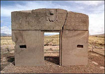 |
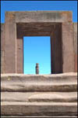 |
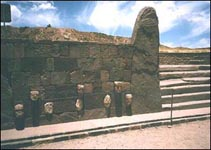 |
Obok miasta, w wykopie podczas budowy drogi znaleziono wymieszane ze sob± szcz±tki
ludzi, zwierz±t, ceramiki. Jest tego bardzo du¿o. Tak du¿o, ¿e nikomu nie uda³o siê
jeszcze dokonaæ klasyfikacji. Miasto zniszczy³a olbrzymia powód¼. Ale czy to by³a
powód¼, czy te¿ tsunami z jeziora Titicaca? Oficjalna nauka pomija ten fakt
milczeniem. Jest tylko zdziwienie, dlaczego kiedy¶ linia brzegowa jeziora
przebiega³a inaczej i dlaczego jej p³aszczyzna nie jest równoleg³a do obecnej.
Przyjêcie za³o¿enia "wielkiego uskoku..." doskonale to t³umaczy. Najpierw jezioro
cofa siê na pó³noc, by po jakim¶ czasie ze zdwojonym impetem ruszyæ na po³udnie i
zatopiæ miasto. Linia brzegowa zajmuje nowe miejsce, ale p³aszczyzna wody, na skutek
zmiany po³o¿enia geograficznego, nie jest ju¿ równoleg³a do poprzedniej.
|
Tarxien • Mnajdra • Hagar Qim |
Przenie¶my siê na teren Europy. Tutaj te¿ mo¿na odnale¼æ cyklopowe budowle. O
Mykenach ju¿ wspomnia³em. Jeszcze mamy Tiryns, Gigantjê, mnóstwo rozrzuconych po
kontynencie budowli megalitycznych. Czy fundamenty Aten, Delf i innych starych miast
greckich te¿ pamiêtaj± czasy Bogów? Przedstawiam budowle na ma³ej wyspie na morzu
¦ródziemnym - na Malcie.
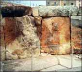 |
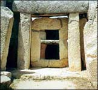 |
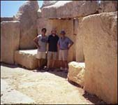 |
Od lewej ruiny Tarxien, dalej Mnajdra i Hagar Qim. Rzadko mo¿na je znale¼æ w
literaturze, bo nie pasuj± zupe³nie do niczego. Budowane na planach okrêgu czy
owalu, nie przypominaj± zupe³nie nic znanego. No i te olbrzymie bloki kamienne.
Jaka¶ ¶wiatowa zaraza, moda czy jeszcze co¶ innego? Od pozosta³ych w innych czê¶ciach
¶wiata odró¿nia je stopieñ zniszczenia. S±dzê, ¿e jest to wp³yw zmian klimatycznych
oraz warunków atmosferycznych w Europie, oddzia³uj±cych na nie przez tysi±ce, je¶li
nie wiêcej lat.
Najs³ynniejszy kr±g ¶wiata. Obserwatorium astronomiczne pierwotnych, miejsce kultu
Druidów, kr±g sk³adania ofiar? Nie ma sprecyzowanego celu, dla którego zosta³o
zbudowane. Wiek ustalono na 1900-1400 lat pne. Mnóstwo teorii, ale ¿adna nie jest
pewna. Wiek obiektu okre¶lono na podstawie badañ C-14 szcz±tków niespalonego drewna
i szkieletu jakiej¶ pad³ej zwierzyny.
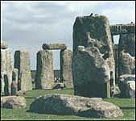 |
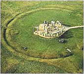 |
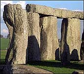 |
To co dzisiaj widzimy, to ruiny w op³akanym stanie, a prawdopodobnie kiedy¶ by³y
to doskona³e prostopad³o¶cienne bloki. Czas i klimat zrobi³y swoje. Erozja zniszczy³a
pierwotne kszta³ty. Kilka podpór le¿y przewróconych na ziemi. Czy nie jest to efektem
potê¿nego trzêsienia ziemi? Kamienny kromlech Stonehenge jest jedynym w swoim rodzaju.
Znanych jest jeszcze kilka, ale ¿aden mu nie dorównuje.
Kiedy faktycznie zosta³ wzniesiony? Kiedy uleg³ zniszczeniu? Byæ mo¿e zosta³
zniszczony przez wielkie trzêsienie ziemi 12,5 tysi±ca lat temu. Wielka Brytania
nie jest terenem sejsmicznym. Zwróæmy tak¿e uwagê na sposób po³±czenia podpór z
legarami. Wszystkie ³±czone s± za pomoc± czopów i wypustów.
Trylit, czyli obiekt z³o¿ony z trzech czê¶ci kamiennych. Znajduje siê w archipelagu
wysp Tonga na Pacyfiku. Okazuje siê, ¿e tak¿e na wyspach oceanu Spokojnego istnia³a
cywilizacja zdolna obrabiaæ olbrzymie kamienne bloki.
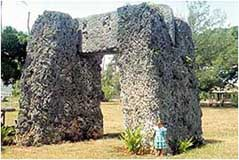 |
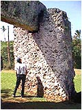 |
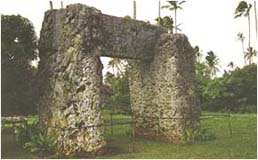 |
Ten o tyle jest ciekawy, ¿e poziomy blok kamienia jest dok³adnie wpasowany w specjalnie
wykonane wyciêcia w pionowych kolumnach. To co dzi¶ widaæ, to efekt dzia³ania wiatru i
deszczu. Na pocz±tku obiekt ten mia³ zapewne wygl±d doskona³ych prostopad³o¶cianów.
Ciekawe ile trzeba lat oddzia³ywania si³ przyrody, by doprowadziæ do takiej erozji?
Jaka ludzka cywilizacja u¿ywa³a tych naczyñ w gospodarstwach domowych? Na terenach
dzisiejszego Laosu znaleziono ca³e pola usiane takimi naczyniami. Dlaczego wykonano
je z tak trudnego w obróbce surowca jakim jest kamieñ? Co przechowywano w tak trwa³ych
naczyniach?
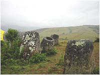 |
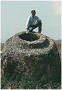 |
|
Co mog³o spowodowaæ rozbicie tak potê¿nych naczyñ? Jaka si³a spowodowa³a taki
nieporz±dek? Czy naczynia od pocz±tku by³y zagrzebane w ziemi, czy zasypa³o je
wielkie tsunami wywo³ane "wielkim uskokiem skorupy ziemskiej"?
Jak ju¿ zd±¿yli¶my zauwa¿yæ, u¿ywanie do budowy olbrzymich kamiennych bloków nie jest
domen± jednego kraju, czy obszaru. Na podstawie pokazanych przyk³adów mo¿na wysnuæ
wniosek, ¿e ta technologia by³a obecna na ca³ym ¶wiecie. Nie wszystkie wygl±daj± jak
"spod ig³y", lecz jest to efektem dzia³ania ró¿nych warunków atmosferycznych i jak
s±dzê, tak¿e sejsmicznych.
Na terenie Iranu stoi budowla z du¿ych, kamiennych bloków oczywi¶cie ochrzczona
przez naukê grobowcem. Czy takie by³o pierwotne przeznaczenie? Nie wiadomo. Obok
piramida w greckiej Argolidzie, której wiek okre¶la siê na du¿o starszy od wielkiej
piramidy. Zahi Hawass z powodów czysto komercyjnych ma inne zdanie i oczywi¶cie
protestuje. Dlaczego jednak rz±d Grecji zabroni³ przeprowadzenia tu dok³adnych
badañ? Na trzecim zdjêciu przej¶cie w murze zamku "Bia³a czapla" w Japonii.
Zamek okre¶lany jako wspó³czesny, ale sk±d pewno¶æ co do fundamentów i murów?
|
|
|
|
|
| Abydos |
Indie |
Peru |
Petra |
Qenko |
Jaka to cywilizacja na ca³ym ¶wiecie u¿ywa³a technologii pozwalaj±cej ci±æ kamieñ?
Oczywi¶cie, obowi±zuj±ca teoria mówi tylko o mozolnym skuwaniu ska³y przez ludzi z
epoki kamiennej, bo ¿adnemu badaczowi nie przysz³o na my¶l, by przyjrzeæ siê z bliska
takim schodom i to w miejscach, gdzie najrzadziej stawia siê stopy. Nikt nie zastanowi³
siê, dlaczego w tych miejscach powierzchnie te¿ s± g³adkie. Tu nie pomog± bajania o
czasie i o wyg³adzaniu przez tysi±ce bosych, pielgrzymich stóp.
|
|
|
|
| Mykeny |
Karystos |
Liban |
Sacsayhuaman |
Czy takie bramy wznoszono tylko przy pomocy drewnianych dr±gów, ziemnych nasypów,
lin wykonywanych z dostêpnych ro¶lin i ludzkiej si³y fizycznej? Jak przesuwano
pó¼niej te kamienne bloki na swoje miejsce? Dlaczego, w celu udowodnienia tej
teorii nie zebra³a siê grupa tych naukowych geniuszy, by zbudowaæ choæ podobn±
bramê? Powód jest tylko jeden - ³atwiej powiedzieæ ni¿ wykonaæ.
Dlaczego tak siê dzieje, ¿e wszyscy bez wyj±tku archeologowie i historycy s± zgodni,
¿e to wszystko wykona³ i wybudowa³ cz³owiek? Dlatego, ¿e jak w ka¿dej powa¿nej
organizacji tak i tu obowi±zuje zakaz samodzielnego my¶lenia i nale¿y wyra¿aæ
¶ci¶le okre¶lone pogl±dy zaakceptowane przez naukow± gerontokracjê. Sankcje dla
niepos³usznych s± okre¶lone tak ¶ci¶le, ¿e a¿ matematyczne - usuniêcie poza nawias,
zredukowanie do zera itd., co powoduje skutki ju¿ bardziej bli¿sze humanizmowi -
¿egnajcie darmowe podró¿e, ¿egnaj s³awo czy ¿egnaj wystawne ¿ycie.
|